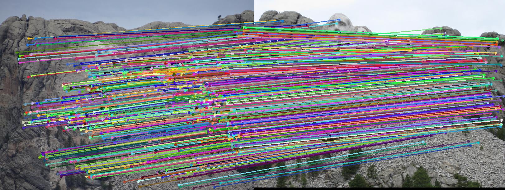
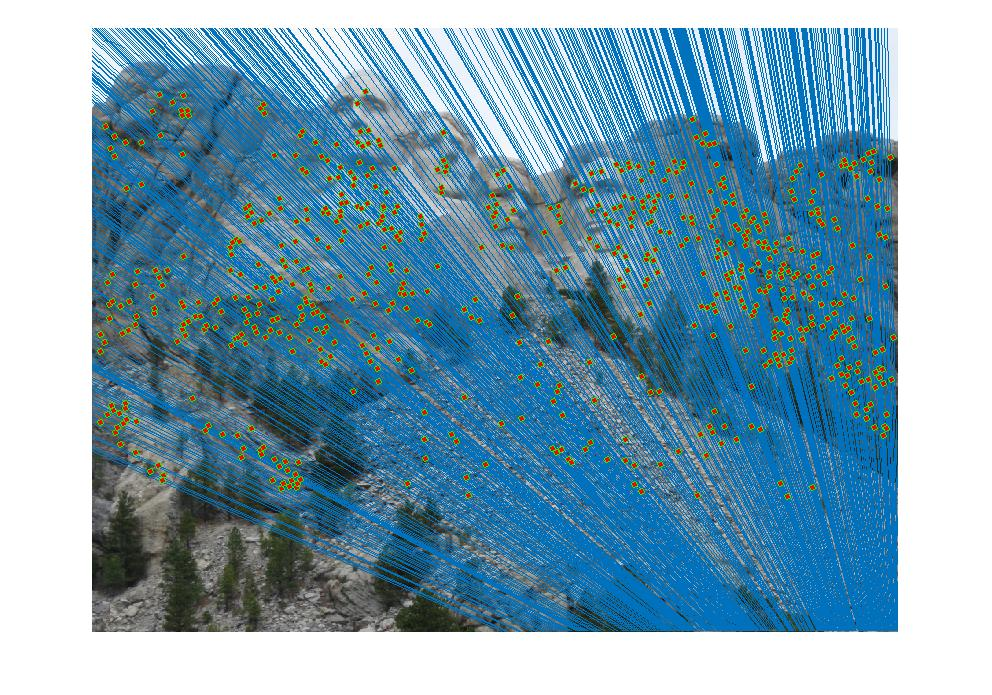
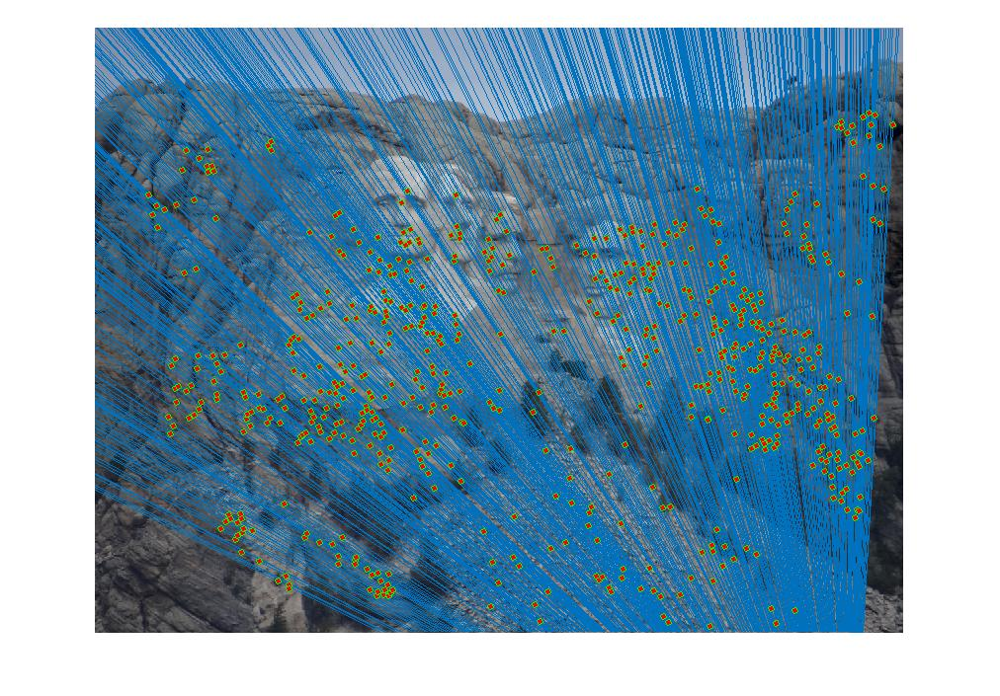
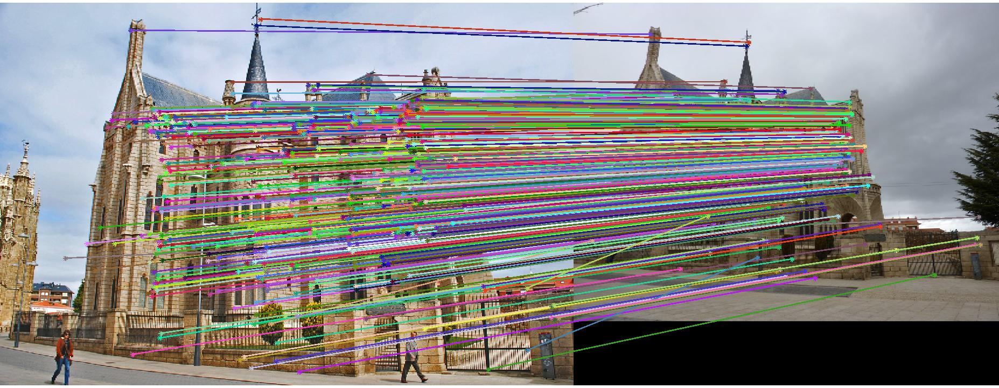
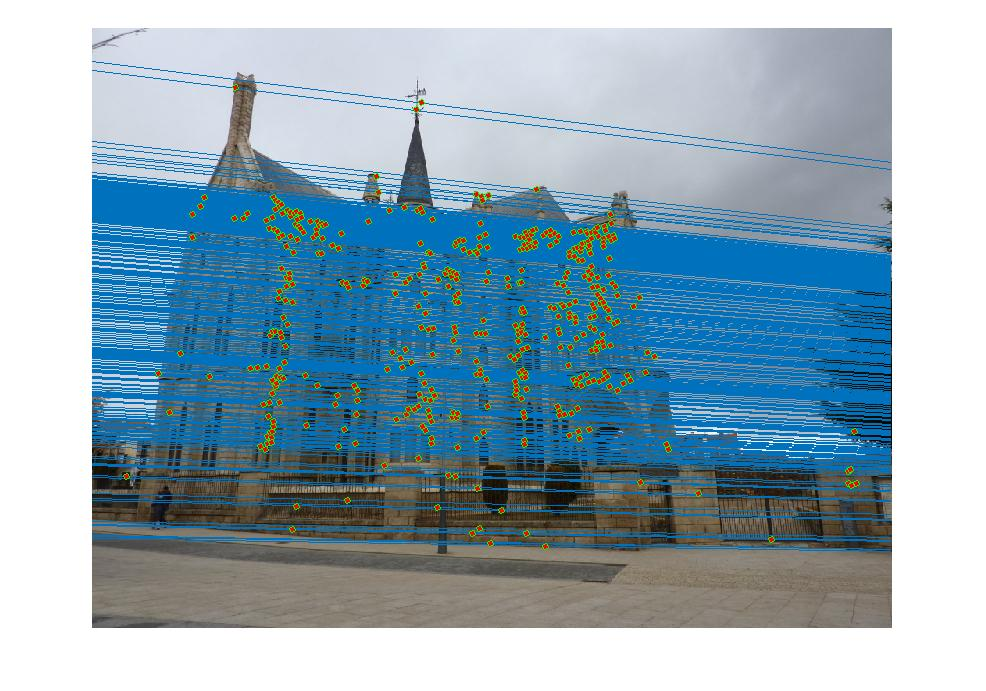
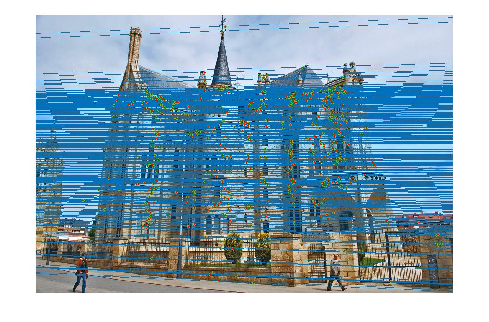

Project 3 / Camera Calibration and Fundamental Matrix Estimation with RANSAC
Part 1: Camera Projection Matrix
In part 1, the projection matrix was calculated using linear regression by fixing m34 to be one. The remaining values were calculated from there. The discovered matrix M using the given points is below.
| 0.7679 |
-0.4938 |
-0.0234 |
0.0067 |
| -0.0852 |
-0.0915 |
-0.9065 |
-0.0878 |
| 0.1827 |
0.2988 |
-0.0742 |
1.0000 |
Using this the center of the camera was found to be <-1.5126, -2.3517, 0.2827>
Part 2: Fundamental Matrix Estimation
Using single value decomposition given corresponding points, F was calculated. Single value decomposition was done again to reduce the rank to 2. These two steps were done with the built in matlab SVD() function. The calculated fundamental matrix for the given set of points is below.
| -0.0000 |
0.0000 |
-0.0019 |
| 0.0000 |
0.0000 |
0.0172 |
| -0.0009 |
-0.0264 |
0.9995 |
Using this matrix, the epipolar lines below were drawn
Part 3: Fundamental Matrix with RANSAC
RANSAC involves randomly sampling some N number of points from the input. Then a fundamental matrix is estimated from these points. It is then checked against all points to see how many points fit this estimated points. These points are marked as inliers. Inliers are calculated using the innate property of the fundamental matrices that x*F*x' = 0 thus any deviation from this property can be used as the distance from the truth. This algorithm has 3 values that can be played with to produce better results. The sample size which should be set to the size required to fit a model. The second is the number of iterations which will be in the thousands. The final is the inlier distance. These inlier pairs become the final corresponding points. This cleans up the corresponce. Below is a run of the algorithm on the Mount Rushmore images
Additional Examples
Notre Dame
Gaudi
Woodruff Dorm
Extra Credit
To improve the fundamental matrix estimate, the coordinates used to compute the matrix can be normalized before it. To do this, the mean was found for u and v. Lets call it c_u and c_v. A scale factor was found by subtracting the means from the coordinates then finding the standard deviation of all the offsetted coordinates. Finally s is set equal to the reciprocal of the standard deviations. Lets call these s_u and s_v. To find the normalized coordinate the matrix T was calculated as the following.
T = [s_u, 0 ,0; 0, s_v, 0; 0, 0, 1] * [1, 0, -c_u; 0, 1, -c_v; 0, 0, 1];
Once calculated, the fundamental matrix must be converted back to normal coordinates by multipling the transpose of T_b by fundamental matrix by T_a. Examples of the improvement are below. Gaudi illustrates the improvements well as the number of outliers included can be visually seen to decrease
Mount Rushmore
| Without Normalization |
|
|
|
|
| With Normalization |
|

|
|


|
Gaudi
| Without Normalization |
|
|
|
|
| With Normalization |
|

|
|


|